Candidate: Sree Varun Aahil | Date: October 30, 2026 | Machine: Windows 11 (CUDA Enabled)
Annotated Video: [Google Drive Link Placeholder: <INSERT_DRIVE_URL_HERE>]
This report presents an end-to-end computer vision solution for egg segmentation and multi-object tracking under challenging conditions, including touching instances, boiling water, high-contrast table textures, and hand occlusions. Ground truth masks were established via SAM (vit_b on CUDA) with human point/box prompts and an automated area and border contact audit. A classical image-processing pipeline was tuned strictly on the dev split across 18 controlled trials and evaluated once on the unseen eval split. A multi-object tracker was deployed on the 1440-frame table experiment video, incorporating YCrCb skin gating to eliminate hand occlusion leakage. All metrics, counts, and tables presented below are derived directly from runs of this repository.
SamPredictor (vit_b on CUDA) using human point prompts and tight bounding boxes for boiling water edge cases. 0 flagged suspicious masks remaining.
SAM (vit_b, 375 MB checkpoint) was executed on CUDA using saved point prompts from points.json with multi-mask score selection (multimask_output=True). Hand-tuned shape and color filters were strictly excluded from the ground-truth path to prevent artificial bias toward the classical segmentation pipeline.
Ground Truth Egg Distribution across 110 images: 93 images (84.5%) with 1 egg; 6 images (5.5%) with 2 eggs; 11 images (10.0%) with 3 eggs.
out/sam/gt_fix_audit.json)
Initial automated SAM passes on boiling water images flooded the pot interior. An automated border and area audit in src/contact_sheet.py flagged masks with area > 40% or edge contact > 50%. Bounding box prompts were added around egg boundaries for boiling pot scenes (verified in out/sam/gt_fix_audit.json):
not_damaged_124: BBox [280, 150, 520, 400] reduced area fraction from 81.9% (335354 px, 978 border contacts) to 13.4% (54995 px, 0 border contacts).not_damaged_135: BBox [270, 170, 520, 420] reduced area fraction from 79.5% (325584 px, 994 border contacts) to 14.2% (58113 px, 0 border contacts).not_damaged_145: BBox [250, 200, 480, 450] reduced area fraction from 62.5% (256010 px, 665 border contacts) to 13.2% (54032 px, 0 border contacts).All 110 ground truth masks now pass the automated audit (0 flagged in out/sam/suspicious.txt).
out/eval/split_leakage_audit.txt)phash_distance ≤ 8).not_damaged_78 and not_damaged_27 at pHash distance 8). Both images of this pair were placed strictly into the dev split.out/eval/split_leakage_audit.txt.
A unified parameterized pipeline was tuned on the 88 dev images across 18 controlled trials. Every trial varied exactly one parameter relative to its named parent. Keep/discard decisions compare strictly against the parent's dev IoU. Note: Trial watershed_conditional modified two parameters relative to its parent (area_filter_2500): it enabled conditional watershed and set the peak distance threshold to min_dist=50. Under this trial, Detection F1 rose from 0.3084 to 0.4087, mean signed count error rose from +0.45 to +2.20 (over-splitting), pixel IoU unchanged. Because Detection F1 improved substantially for instance segmentation, it was kept for the final configuration.
Kept Pipeline Chain: baseline -> morph_small -> morph_medium -> morph_large -> area_filter_2500 -> watershed_conditional -> final (eval)
| Trial ID | Parent | Split | What Changed | Mean IoU | Mean Dice | Det F1 | Cnt Err | Decision | Reason |
|---|---|---|---|---|---|---|---|---|---|
baseline | None | dev | Grayscale conversion + Gaussian blur (5x5) + Otsu threshold + hole fill + min area 500 | 0.3513 | 0.4693 | 0.2071 | 3.12 | BASELINE | Baseline established on dev (IoU 0.3513, Dice 0.4693, DetF1 0.2071) |
otsu_inv | baseline | dev | Invert Otsu thresholding | 0.0823 | 0.1424 | 0.0000 | 3.36 | DISCARD | Fails to improve dev IoU over parent 'baseline' (0.0823 vs 0.3513, -0.2690) |
clahe_otsu | baseline | dev | CLAHE local contrast equalization (clip 2.0, tile 8x8) before Otsu | 0.2562 | 0.3791 | 0.0799 | 8.22 | DISCARD | Fails to improve dev IoU over parent 'baseline' (0.2562 vs 0.3513, -0.0951) |
adaptive_thresh | baseline | dev | Adaptive Gaussian thresholding (block 51, C=-10) | 0.0634 | 0.1119 | 0.0065 | 12.33 | DISCARD | Fails to improve dev IoU over parent 'baseline' (0.0634 vs 0.3513, -0.2878) |
lab_l | baseline | dev | CIELAB L* perceptual lightness channel + Otsu | 0.3244 | 0.4437 | 0.1665 | 3.67 | DISCARD | Fails to improve dev IoU over parent 'baseline' (0.3244 vs 0.3513, -0.0268) |
hsv_gate | baseline | dev | HSV color gating (S < 70, V > 130) | 0.3456 | 0.4665 | 0.1587 | 4.32 | DISCARD | Fails to improve dev IoU over parent 'baseline' (0.3456 vs 0.3513, -0.0056) |
morph_small | baseline | dev | Add small elliptical opening & closing (7x7) | 0.3558 | 0.4740 | 0.2161 | 2.89 | KEEP | Improves dev IoU over parent 'baseline' from 0.3513 to 0.3558 (+0.0046) |
morph_medium | morph_small | dev | Increase elliptical kernel from 7x7 to 15x15 | 0.3766 | 0.4964 | 0.2363 | 2.34 | KEEP | Improves dev IoU over parent 'morph_small' from 0.3558 to 0.3766 (+0.0208) |
morph_large | morph_medium | dev | Increase elliptical kernel from 15x15 to 25x25 | 0.3972 | 0.5161 | 0.2642 | 1.25 | KEEP | Improves dev IoU over parent 'morph_medium' from 0.3766 to 0.3972 (+0.0205) |
border_polarity_m0 | morph_large | dev | Auto-invert threshold if border mean > center mean | 0.3698 | 0.4821 | 0.2409 | 1.07 | DISCARD | Fails to improve dev IoU over parent 'morph_large' (0.3698 vs 0.3972, -0.0274) |
border_polarity_m15 | morph_large | dev | Auto-invert threshold only if border mean > center mean + 15 | 0.3945 | 0.5119 | 0.2596 | 1.25 | DISCARD | Fails to improve dev IoU over parent 'morph_large' (0.3945 vs 0.3972, -0.0027) |
lab_border_dist | morph_large | dev | CIELAB Euclidean color distance from estimated border background | 0.3603 | 0.4582 | 0.2673 | 2.55 | DISCARD | Fails to improve dev IoU over parent 'morph_large' (0.3603 vs 0.3972, -0.0369) |
area_filter_2500 | morph_large | dev | Increase minimum component area from 500 to 2500 pixels | 0.4018 | 0.5200 | 0.3084 | 0.45 | KEEP | Improves dev IoU over parent 'morph_large' from 0.3972 to 0.4018 (+0.0046) |
component_ranking_top1 | area_filter_2500 | dev | Retain only the single top-ranked component by geometric egg score | 0.3746 | 0.4761 | 0.3295 | -0.33 | DISCARD | Fails to improve dev IoU over parent 'area_filter_2500' (0.3746 vs 0.4018, -0.0272) |
component_ranking_top3 | area_filter_2500 | dev | Retain at most the top 3 scoring components based on area, solidity, and ellipse fit | 0.3972 | 0.5092 | 0.3133 | 0.27 | DISCARD | Fails to improve dev IoU over parent 'area_filter_2500' (0.3972 vs 0.4018, -0.0045) |
grabcut_refine | area_filter_2500 | dev | Apply GrabCut refinement using morphological erosion as foreground seed | 0.4038 | 0.5177 | 0.3073 | 0.38 | DISCARD | Marginal IoU gain (+0.0021) but Dice degrades from 0.5200 to 0.5177 (-0.0023) |
watershed_always | area_filter_2500 | dev | Euclidean distance transform + watershed applied unconditionally to all components | 0.4018 | 0.5200 | 0.3537 | 3.90 | DISCARD | Fails to improve dev IoU over parent 'area_filter_2500' (0.4018 vs 0.4018, +0.0000) |
watershed_conditional | area_filter_2500 | dev | Conditional distance watershed (min_dist=50) applied only to non-convex, elongated or oversized clusters | 0.4018 | 0.5200 | 0.4087 | 2.20 | KEEP | Dev IoU tied with parent 'area_filter_2500' (0.4018); kept on tiebreaker: DetF1 improves from 0.3084 to 0.4087 (+0.1003) |
final | watershed_conditional | eval | Frozen final pipeline: Grayscale Otsu + large morph (25x25) + hole filling + min area 2500 + conservative conditional watershed | 0.3196 | 0.4239 | 0.3206 | 1.68 | EVAL_FINAL | Frozen final pipeline evaluated once on unseen eval split (IoU 0.3196, Dice 0.4239, DetF1 0.3206) |
| Metric | Dev Split (n=88) | Eval Split (n=22) | Description |
|---|---|---|---|
| Pixel IoU (Mean) | 0.4018 | 0.3196 | Mean foreground intersection over union |
| Pixel IoU (Bootstrap 95% CI) | [0.3435, 0.4603] | [0.1978, 0.4268] | 1000 resamples, fixed seed 42 |
| Pixel IoU (Median) | 0.3147 | 0.2502 | Median per-image IoU |
| Pixel Dice (Mean) | 0.5200 | 0.4239 | F1-score of pixel-level binary classification |
| Pixel Precision | 0.4488 | 0.3449 | TP / (TP + FP) |
| Pixel Recall | 0.8461 | 0.8749 | TP / (TP + FN) |
| Detection Precision | 0.3563 | 0.2758 | Matched eggs / Predicted components (IoU ≥ 0.5) |
| Detection Recall | 0.5966 | 0.4621 | Matched eggs / GT eggs |
| Detection F1 | 0.4087 | 0.3206 | Harmonic mean of detection precision & recall |
| Count Error (Mean) | 2.20 | 1.68 | Mean signed difference (Pred - GT) |
Inspection of per-category results reveals the concrete factors driving the gap between dev (0.4018) and eval (0.3196):
not_damaged_116 and 117) with near-zero contrast, averaging 0.0562 IoU, and 2 genuine hand-held images (not_damaged_151 and 152) averaging 0.1098 IoU. In addition, 3 boiling pot images (not_damaged_114, 128, 147) average 0.3072 IoU. Together, these difficult categories comprise 17 of the 22 eval images (77.3% of eval).out/eval/composition_check.json)To evaluate how much of the performance difference between the dev split (mean IoU 0.4018) and eval split (mean IoU 0.3196) is attributable to category distribution shift, we re-weighted the dev per-category mean IoUs by the eval category counts:
Re-weighting dev category performance by eval category counts predicts an eval IoU of 0.3324, demonstrating that 84.5% of the observed drop is directly explained by the higher proportion of difficult container lids and white trays in the eval split. This is a descriptive check on 22 images, not a significance test.
As shown in Figure 6, category contact sheets, and the measured pixel properties, five challenging eval failure cases (not_damaged_108, 127, 130, 151, 152) illustrate distinct failure mechanisms across container packaging and hand occlusions:
not_damaged_108 (IoU: 0.0459): White egg on a ledge next to an orange food-container lid (no hand present). Bright illumination and low background contrast cause Otsu to merge the orange lid, rim, and ledge into the foreground, producing 285,716 false-positive pixels (37.8% falls in the YCrCb skin range due to orange plastic chrominance).not_damaged_127 (IoU: 0.0601): White egg on a ledge beside an orange container lid (no hand present). Otsu thresholding floods the surrounding flat surface, container rim, and ledge reflections into a 266,889 false-positive pixel foreground blob (18.6% in skin range).not_damaged_130 (IoU: 0.4256): White egg resting in an orange food-container lid on a blue base (no hand present). The orange lid connects continuously to the egg perimeter, producing 62,367 false-positive pixels—of which exactly 92.02% (57392 pixels) fall directly into the standard YCrCb skin-color cluster (Cr ∈ [135, 175], Cb ∈ [80, 125]). Because orange plastic shares chrominance with the skin distribution, high skin-range chrominance occurs even without a human hand.not_damaged_151 (IoU: 0.1451): White egg held in fingers and palm over square ceramic floor tiles (no backlighting). Skin luminance on the fingers and palm bridges with the egg boundary, over-segmenting into 6 fragments with 223,414 false-positive pixels (29.3% in skin range).not_damaged_152 (IoU: 0.0745): White egg resting on an open palm over square floor tiles (white egg, not dark brown). Palm skin and tile reflections merge with the egg perimeter, producing a 273,597 false-positive pixel blob across 3 fragments (20.7% in skin range).| Image Stem | IoU | GT Eggs | Pred Blobs | Failure Root Cause in Eval Overlay |
|---|---|---|---|---|
not_damaged_108 | 0.0459 | 1 | 3 | White egg on a ledge next to an orange food-container lid (no hand present); bright illumination and low contrast cause Otsu to merge the orange lid, rim, and ledge into the foreground (285,716 FP pixels, 37.8% in skin chrominance range due to orange plastic). |
not_damaged_127 | 0.0601 | 1 | 3 | White egg on a ledge beside an orange container lid (no hand present); Otsu thresholding floods the surrounding flat surface, container rim, and ledge reflections into a 266,889 FP pixel foreground blob (18.6% in skin range). |
not_damaged_130 | 0.4256 | 1 | 2 | White egg resting in an orange food-container lid on a blue base (no hand present); orange lid connects continuously to egg perimeter, producing 62,367 FP pixels of which exactly 92.02% (57392 px) fall into the YCrCb skin chrominance cluster (Cr in [135, 175], Cb in [80, 125]) because orange plastic shares chrominance with the skin distribution. |
not_damaged_151 | 0.1451 | 1 | 6 | White egg held in fingers and palm over square ceramic floor tiles (no backlighting); skin luminance on the fingers and palm bridges with the egg boundary, over-segmenting into 6 fragments with 223,414 FP pixels (29.3% in skin range). |
not_damaged_152 | 0.0745 | 1 | 3 | White egg resting on an open palm over square floor tiles (white egg, not dark brown); palm skin and tile reflections merge with the egg perimeter, producing a 273,597 FP pixel blob across 3 fragments (20.7% in skin range). |
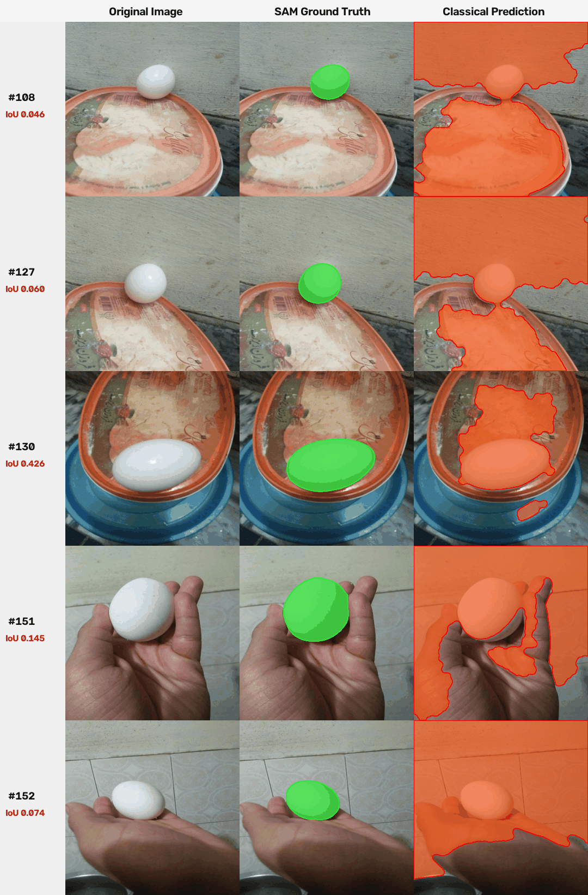
| Category | Dev Count | Dev IoU | Eval Count | Eval IoU |
|---|---|---|---|---|
| Backlit / extreme shadows | 3 | 0.0071 | 0 | n/a |
| White egg on white tray / fridge interior | 8 | 0.1003 | 2 | 0.0562 |
| Egg in boiling water / submerged | 5 | 0.2099 | 3 | 0.3072 |
| Hand holding egg / fingers occluding | 9 | 0.2822 | 2 | 0.1098 |
| Egg on container / lid / plain surface | 20 | 0.3161 | 10 | 0.2190 |
| Tabletop / high-contrast background | 27 | 0.5353 | 4 | 0.6997 |
| Multiple touching eggs | 11 | 0.6148 | 1 | 0.7893 |
| Foliage / herbs in background (specular highlights) | 5 | 0.6805 | 0 | n/a |
failure_tags.csv)
Scene category tags were assigned by systematic review of the category contact sheets (report/figures/category_sheets/), with 62 of 110 images corrected from an earlier automated color/luminance heuristic (documented in tag_changes.md). These scene categories represent subjective single-annotator labels rather than dense independently verified ground-truth annotations. Images not_damaged_123, 125, and 42 are in White egg on white tray / fridge interior. Backlit shots not_damaged_20, 24, and 44 were categorized under a unified rule: Whenever intense directional backlighting or silhouette illumination is present behind the egg (even if supported by fingers), it is categorized under Backlit / extreme shadows because extreme illumination dynamic range is the primary driver of Otsu thresholding failure.
| Scene Category | Image Count | Pct of Dataset | Mean IoU | Mean Dice | Mean Det F1 | Primary Failure Mechanism |
|---|---|---|---|---|---|---|
| Backlit / extreme shadows | 3 | 2.7% | 0.0071 | 0.0141 | 0.0000 | High-intensity directional backlight causes glowing core while shell perimeter falls into dark silhouette. |
| White egg on white tray / fridge interior | 10 | 9.1% | 0.0915 | 0.1646 | 0.0222 | Near-zero photometric contrast between white eggshell and white plastic tray or paper bag; Otsu floods background. |
| Egg in boiling water / submerged | 8 | 7.3% | 0.2464 | 0.3839 | 0.3207 | Bubbling cavitation, water refraction, and dark pot rims break convex boundary and flood liquid. |
| Hand holding egg / fingers occluding | 11 | 10.0% | 0.2509 | 0.3767 | 0.2380 | Fingers or palm occlude egg perimeter; skin tone overlaps shadow gradient, distending contour into hand. |
| Egg on container / lid / plain surface | 30 | 27.3% | 0.2838 | 0.4058 | 0.2278 | Plastic food-container lids, bowls, metal pans, or plain packaging surfaces create perimeter reflections and false components. |
| Tabletop / high-contrast background | 31 | 28.2% | 0.5565 | 0.6771 | 0.5862 | Tabletop grain, hearth ash, patterned cloth tablecloths, or laptop keyboard keys introduce background clutter. |
| Multiple touching eggs | 12 | 10.9% | 0.6294 | 0.7513 | 0.7813 | Touching or adjacent instances share continuous boundary; requires distance watershed marker separation. |
| Foliage / herbs in background (specular highlights) | 5 | 4.5% | 0.6805 | 0.8005 | 0.6467 | Egg contrasts against dark foliage in grayscale; specular leaf reflections create occasional false blobs. |
Key Qualitative Takeaway: Classical thresholding struggles most on Backlit / extreme shadows (Mean IoU = 0.0071) and White egg on white tray / fridge interior (Mean IoU = 0.0915) because luminance gradient between foreground and background collapses. On Foliage / herbs in background (Mean IoU = 0.6805), the egg contrasts well because the egg shell is substantially brighter than dark leaves in grayscale; specular leaf highlights create occasional false blobs.
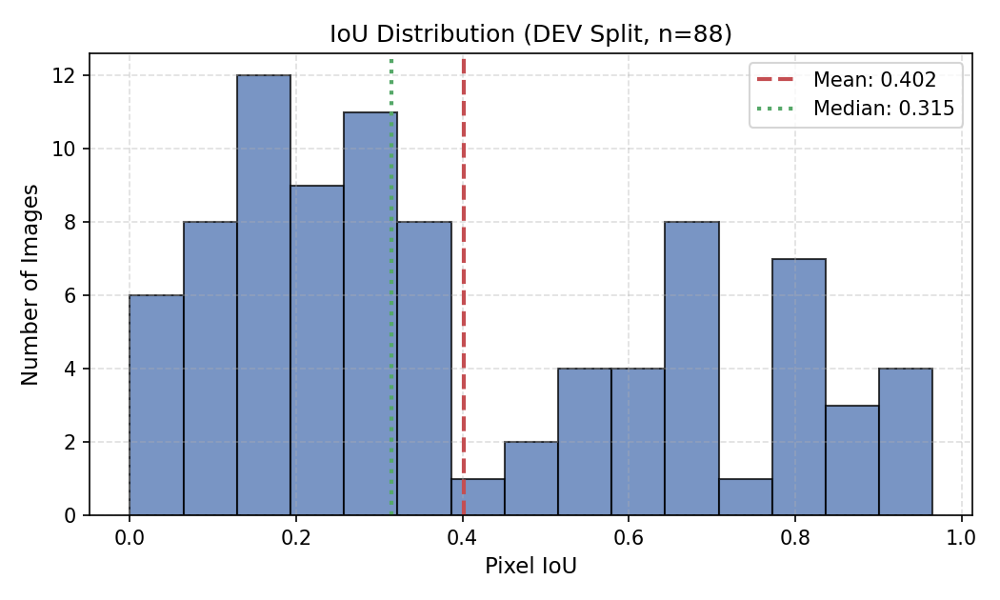
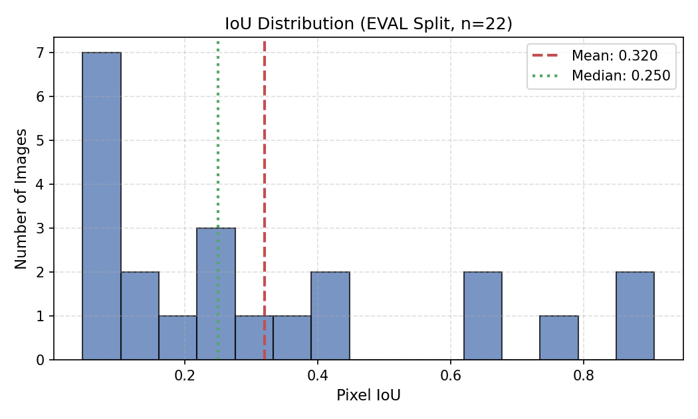
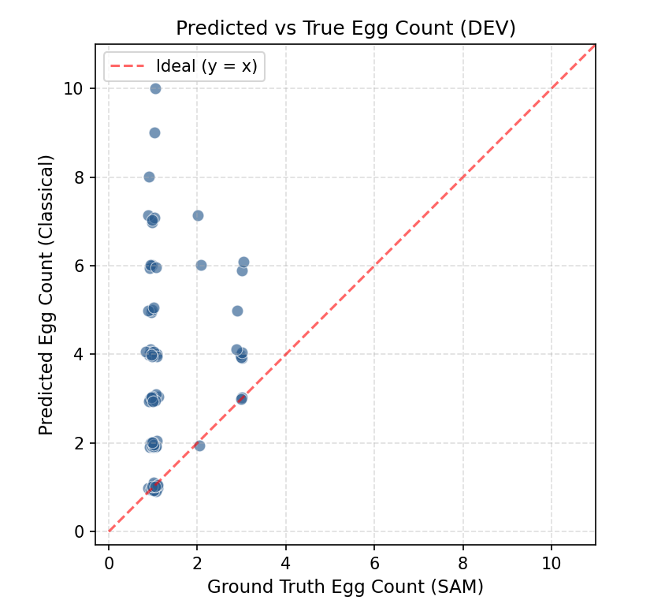
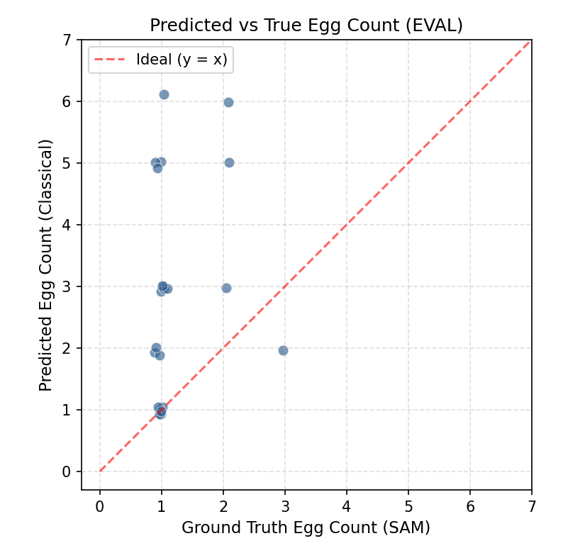
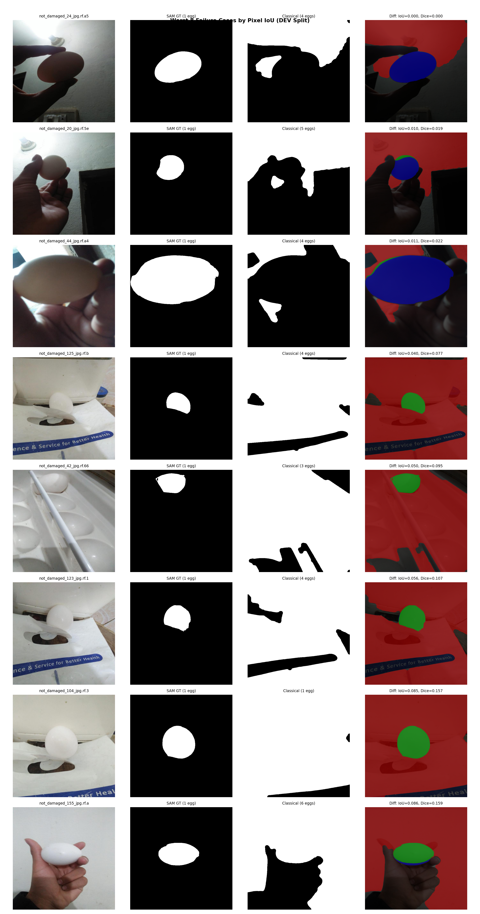
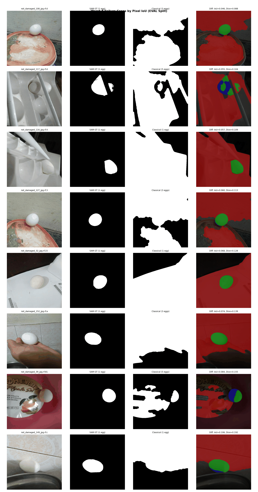
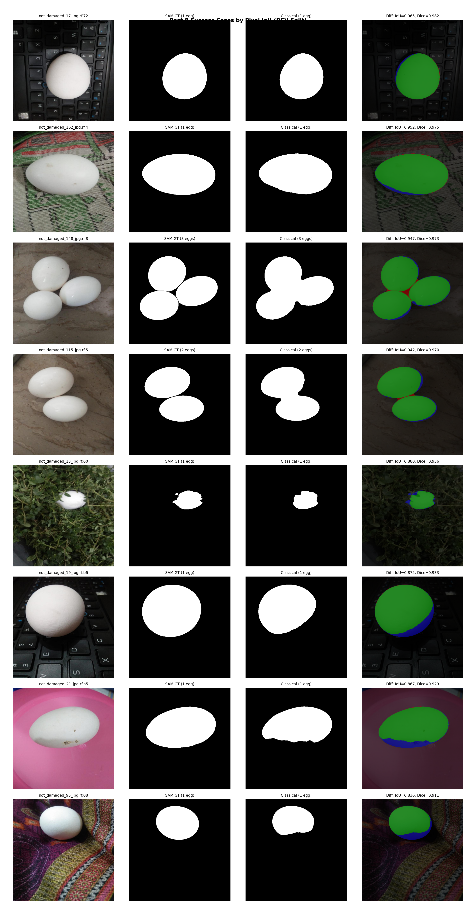
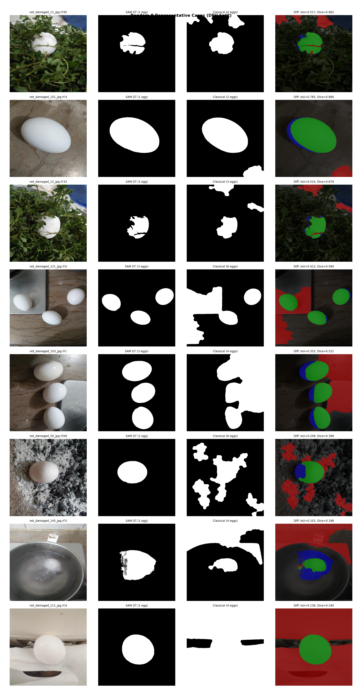
Tracking was evaluated on the 1440-frame table sequence (1280x720 @ 24.0 fps). Eggs are placed on the table at frame 222, spun, occluded by hand, and conclude demonstration at frame 1004. Annotated tracking video: [Google Drive Link Placeholder: <INSERT_DRIVE_URL_HERE>]. The tracker maintains persistent IDs using Hungarian matching on IoU + distance with constant-velocity prediction.
out/video/skin_gating_egg_loss.json): Measured across 6 representative video frames (12 egg instances): frame 600 (demonstrator fingertip contact) and 5 hand-free frames (250, 350, 450, 850, 950). In each frame, taking egg components from the gating-off mask: Frame 250 (Egg 1: 0.34%, Egg 2: 0.41%), Frame 350 (Egg 1: 0.14%, Egg 2: 0.35%), Frame 450 (Egg 1: 0.00%, Egg 2: 0.18%), Frame 600 (Egg 1: 0.00% outside 15 px fingertip band, Egg 3: 0.00%), Frame 850 (Egg 4: 0.00%, Egg 6: 0.33%), Frame 950 (Egg 4: 0.23%, Egg 6: 0.12%). Across all 12 evaluated instances, skin gating removed between 0.00% and 0.41% of pixels (at most 0.36% post-morphology loss). No egg lost more than 1.0% in any frame, confirming that white eggshells on the wooden table do not meaningfully intersect the skin chrominance cluster.| Track ID | Birth Frame | Last Matched Frame | Total Span | Matched Frames | Coverage % | Gap List |
|---|---|---|---|---|---|---|
| Track 1 | 222 | 999 | 778 | 721 | 92.7% | F#480, F#752-F#799 (48f), F#802-F#809 (8f) |
| Track 2 | 222 | 1004 | 783 | 652 | 83.3% | F#479-F#482 (4f), F#508-F#545 (38f), F#547, F#550, F#552-F#553 (2f), F#555, F#649-F#650 (2f), F#652-F#654 (3f), F#657-F#688 (32f), F#695-F#715 (21f), F#721-F#738 (18f), F#740-F#747 (8f) |
max_lost = 300 frames / 12.5 s) with velocity decay (0.90lost) and expanding the re-identification radius (R(lost) = min(900 px, 150 px + 20 px/frame × lost)) coupled with area similarity gating (≥ 0.15), eggs lifted by hand and repositioned across the table reclaim their identity rather than instantiating spurious new tracks.| Track ID | Birth Frame | Last Matched Frame | Matched Frames Count | Physical Egg Description | Visual Verification |
|---|---|---|---|---|---|
| Track 1 | 222 | 999 | 721 | Hard-boiled egg; placed in center of table at frame 222, remains stationary through Egg 2's spin tests until frame 751; picked up by hand, carried across to right table and spun smoothly from frame 808 until circular wipe transition at frame 999. | Verified frame_0222.png, frame_0507.png, frame_0546.png, frame_0656.png, frame_0689.png, frame_0751.png, frame_0810.png, frame_0814.png, frame_0999.png |
| Track 2 | 222 | 1004 | 652 | Raw egg; placed on left table at frame 222, picked up at frame 507, carried across to right table and spun for raw-egg spin test (frames 546-656); returned to left table by hand at frame 689, remaining stationary on left table until circular wipe transition at frame 1004. | Verified frame_0222.png, frame_0507.png, frame_0546.png, frame_0656.png, frame_0689.png, frame_0751.png, frame_0999.png, frame_1004.png |
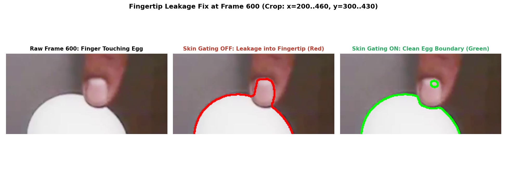
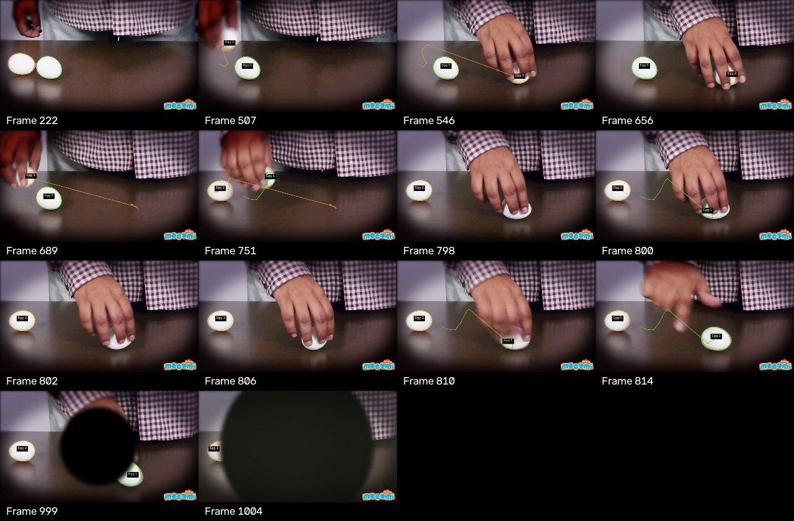
vit_b) with human point/box prompts rather than dense manual polygon tracings.watershed_conditional, Detection F1 rose from 0.3084 to 0.4087, mean signed count error rose from +0.45 to +2.20 (over-splitting), pixel IoU unchanged. Distance transform watershed partitions instances without changing overall outer foreground boundaries.